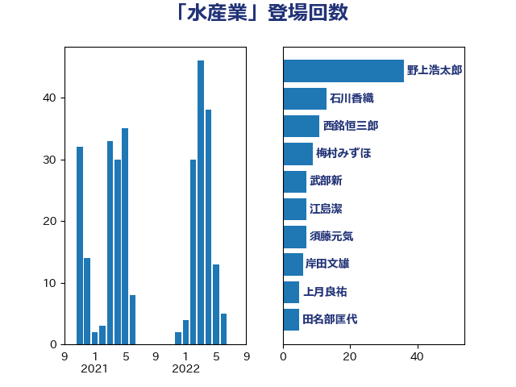

単語「水産業」

| 野上浩太郎 | 自由民主党 | 36 回 |
| 石川香織 | 立憲民主党 | 13 回 |
| 西銘恒三郎 | 自由民主党 | 11 回 |
| 梅村みずほ | 日本維新の会 | 9 回 |
| 武部新 | 自由民主党 | 7 回 |
| 江島潔 | 自由民主党 | 7 回 |
| 須藤元気 | 無所属 | 7 回 |
| 岸田文雄 | 自由民主党 | 6 回 |
| 上月良祐 | 自由民主党 | 5 回 |
| 田名部匡代 | 立憲民主党 | 5 回 |
| 田村貴昭 | 日本共産党 | 5 回 |
| 紙智子 | 日本共産党 | 5 回 |
| 鈴木俊一 | 自由民主党 | 5 回 |
| 高鳥修一 | 自由民主党 | 5 回 |
| 葉梨康弘 | 自由民主党 | 4 回 |
| 加藤竜祥 | 自由民主党 | 3 回 |
| 國重徹 | 公明党 | 3 回 |
| 舞立昇治 | 自由民主党 | 3 回 |
| 進藤金日子 | 自由民主党 | 3 回 |
| 金子恵美 | 立憲民主党 | 3 回 |
| 鈴木英敬 | 自由民主党 | 3 回 |
| 高橋光男 | 公明党 | 3 回 |
| 和田有一朗 | 日本維新の会 | 2 回 |
| 徳永エリ | 立憲民主党 | 2 回 |
| 斉藤鉄夫 | 公明党 | 2 回 |
| 新垣邦男 | 立憲民主党 | 2 回 |
| 横沢高徳 | 立憲民主党 | 2 回 |
| 櫻井周 | 立憲民主党 | 2 回 |
| 江藤拓 | 自由民主党 | 2 回 |
| 池畑浩太朗 | 日本維新の会 | 2 回 |
| 石井啓一 | 公明党 | 2 回 |
| 空本誠喜 | 日本維新の会 | 2 回 |
| 笹川博義 | 自由民主党 | 2 回 |
| 菅義偉 | 自由民主党 | 2 回 |
| 金城泰邦 | 公明党 | 2 回 |
| 上杉謙太郎 | 自由民主党 | 1 回 |
| 下野六太 | 公明党 | 1 回 |
| 中川郁子 | 自由民主党 | 1 回 |
| 中野英幸 | 自由民主党 | 1 回 |
| 佐藤公治 | 立憲民主党 | 1 回 |
| 勝部賢志 | 立憲民主党 | 1 回 |
| 吉田とも代 | 日本維新の会 | 1 回 |
| 吉田豊史 | 日本維新の会 | 1 回 |
| 和田政宗 | 自由民主党 | 1 回 |
| 宮下一郎 | 自由民主党 | 1 回 |
| 寺田静 | 無所属 | 1 回 |
| 小沢雅仁 | 立憲民主党 | 1 回 |
| 小泉進次郎 | 自由民主党 | 1 回 |
| 小熊慎司 | 立憲民主党 | 1 回 |
| 山東昭子 | 自由民主党 | 1 回 |
| 岡本あき子 | 立憲民主党 | 1 回 |
| 岩渕友 | 日本共産党 | 1 回 |
| 岩田和親 | 自由民主党 | 1 回 |
| 平井卓也 | 自由民主党 | 1 回 |
| 平山佐知子 | 無所属 | 1 回 |
| 庄子賢一 | 公明党 | 1 回 |
| 早坂敦 | 日本維新の会 | 1 回 |
| 杉本和巳 | 日本維新の会 | 1 回 |
| 松沢成文 | 日本維新の会 | 1 回 |
| 枝野幸男 | 立憲民主党 | 1 回 |
| 根本幸典 | 自由民主党 | 1 回 |
| 武田良太 | 自由民主党 | 1 回 |
| 津島淳 | 自由民主党 | 1 回 |
| 玉木雄一郎 | 国民民主党 | 1 回 |
| 石井正弘 | 自由民主党 | 1 回 |
| 石井苗子 | 日本維新の会 | 1 回 |
| 石垣のりこ | 立憲民主党 | 1 回 |
| 神田潤一 | 自由民主党 | 1 回 |
| 福島伸享 | 無所属 | 1 回 |
| 穀田恵二 | 日本共産党 | 1 回 |
| 笠井亮 | 日本共産党 | 1 回 |
| 簗和生 | 自由民主党 | 1 回 |
| 緑川貴士 | 立憲民主党 | 1 回 |
| 芳賀道也 | 国民民主党 | 1 回 |
| 萩生田光一 | 自由民主党 | 1 回 |
| 落合貴之 | 立憲民主党 | 1 回 |
| 藤田文武 | 日本維新の会 | 1 回 |
| 谷田川元 | 立憲民主党 | 1 回 |
| 近藤和也 | 立憲民主党 | 1 回 |
| 野間健 | 立憲民主党 | 1 回 |
| 鈴木宗男 | 日本維新の会 | 1 回 |
| 高橋千鶴子 | 日本共産党 | 1 回 |